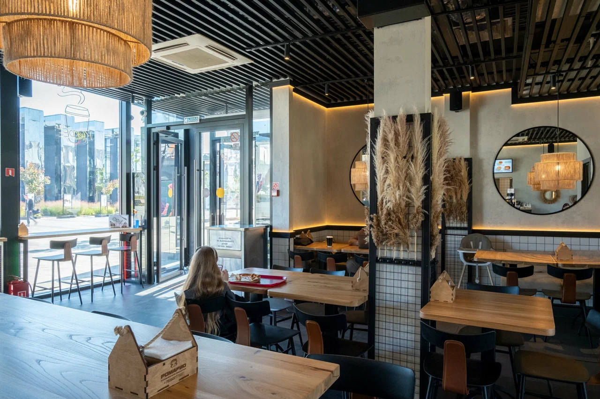
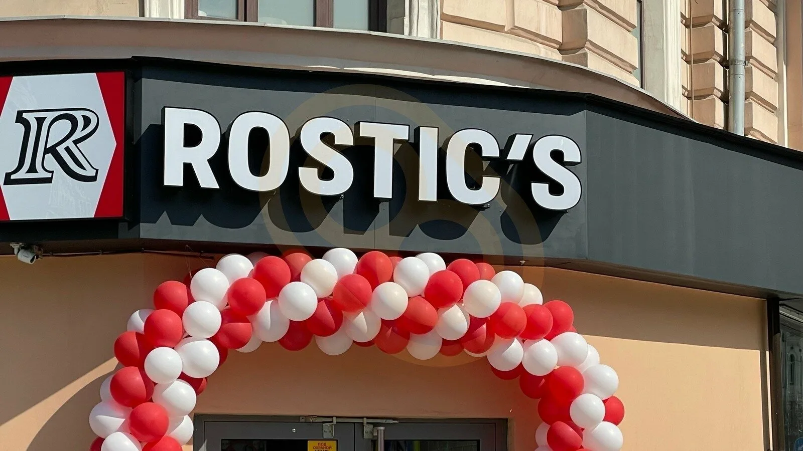
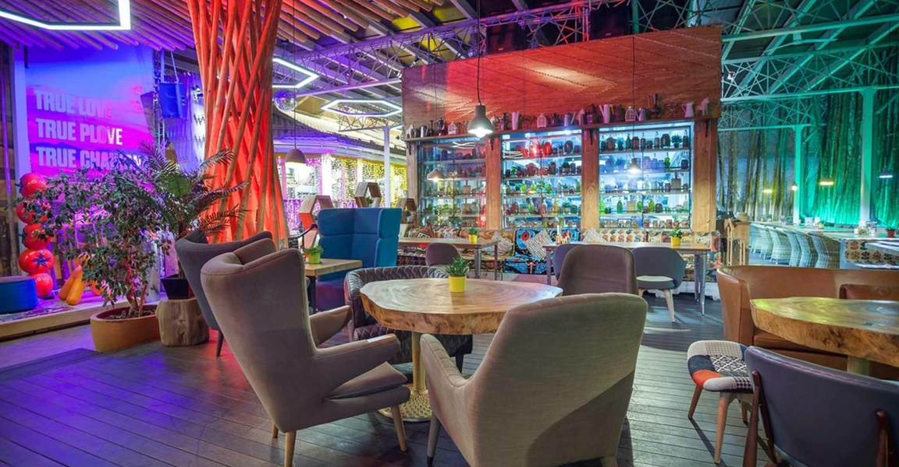
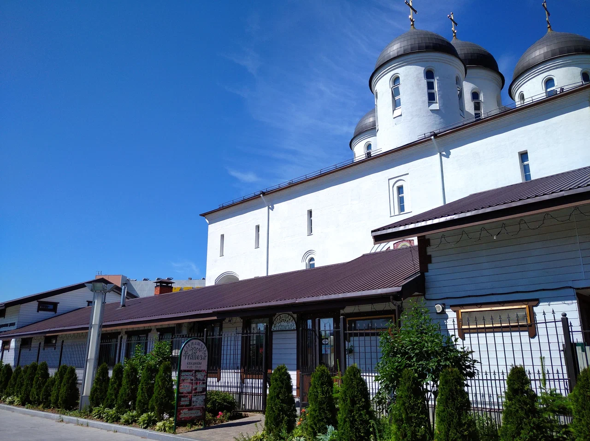

Независимо от города, каждый наш ресторан — это место, где гости наслаждаются комфортом, отличным сервисом и уникальной атмосферой.
Адрес: Ходынский бульвар, 4
Режим работы: C 10:00 до 22:00
Телефоны: +7 (929) 601-95-80
Официальный сайт: https://www.torrogrill.ru/
Средний чек: 2500р

РомариоКафе «Ромарио» предлагает своим гостям блюда итальянской кухни, такие как пицца, паста, креветки в чесночном масле, картофель фри и другие.
Адрес: Ходынский бул., 10Б
Режим работы: Ежедневно 10:00–22:00
Телефоны: +7 (906) 027-78-87
Официальный сайт:https://romariopizza.ru/
Средний чек: 1000р

ROSTIC'SАдрес: Ходынский бул., 2, Москва
Режим работы: ежедневно с 8:00 до 23:30.
Телефоны: +7 (963) 630-45-78
Официальный сайт: https://rostics.ru/
Средний чек: 450р

Чайхона № 1Ресторан «Чайхона №1» предлагает своим гостям уютную атмосферу, оформленную в восточном стиле, с мягкими подушками и яркими деталями, которые создают ощущение настоящего восточного уюта
Адрес: Ходынский бул., 4
Режим работы: ежедневно с 10:00 до 22:00.
Телефоны: +7 (495) 927-55-55
Официальный сайт: https://chaihona1.ru/
Средний чек: 1500р

Трапезная«Трапезная» — это кафе, расположенное на территории православного храмового комплекса. Интерьер заведения способствует восприятию быта монахов или служителей церкви.
Адрес: Ходынский бул., 6, стр. 3
Режим работы: ежедневно с 9:00 до 20:00.
Средний чек: 250р

Ресторан «Лука» предлагает своим гостям блюда грузинской кухни, приготовленные по традиционным рецептам. В меню можно найти такие блюда, как хачапури, хинкали, шашлык, чахохбили, а также салаты, супы и десерты.
Адрес: Ходынский бул., 2
Режим работы: ежедневно с 12:00 до 00:00.
Телефоны: +7 (916) 960-57-77
Официальный сайт:https://luca.moscow/
Средний чек: 1500р